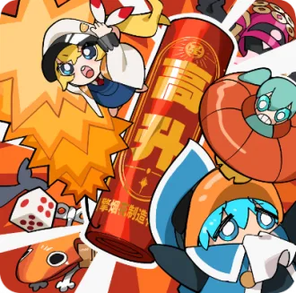
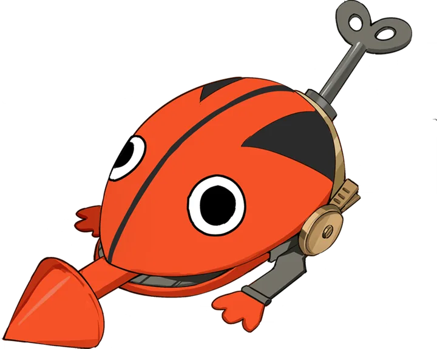

卡牌/手牌官方原文 ↗高升炮合作挑战（PVE）：指定10格内的一个怪物，造成3点伤害，移除目标炒热气氛越战越勇且本轮目标无法反击编号21009类型Effect资料编号21009类型Effect对象Entity英文名Firecrackers来源地图卡牌:水乡古镇详解注意：高升炮仅在合作挑战模式的地图水乡古镇中作为专属卡牌出现。 关于该卡牌的获取方式，请查阅对应页面。花絮*高升炮卡面中心的角色具体如下： **芬妮。 **爆竹呱呱。 **长戟灵体。 **指挥平台。 **海盗王嘎呜。历史*2026年2月6日 **对文本进行了标准化。 *2025年1月24日 **引入游戏。图片HandCard 21009相关内容芬妮角色爆竹呱呱怪物长戟灵体怪物指挥平台怪物海盗王嘎呜怪物丧心病狂卡牌/手牌人机交融卡牌/手牌以毒攻毒卡牌/手牌